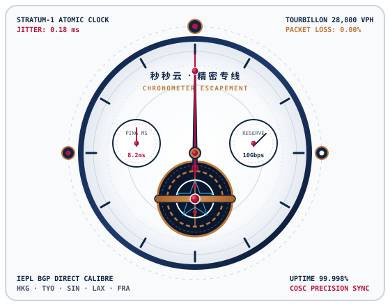

双发条盒 IEPL 物理内网专线
拒绝廉价公网中转，全线配备深港、沪日、广新双冗余运营商级内网专线。数据包无需经过公网国际出口排队，宛如双发条盒恒定输出充沛动力，晚高峰依然极速秒开。
跨境跳数损耗
直降 78.5%
如同瑞士高级制表师打磨每一枚擒纵齿轮，秒秒云以微秒级路由调度引擎消除跨国公网重力阻塞。搭载深港、沪日、京德全冗余 IEPL 内网传输机芯，为您带来 4K 原盘极速秒开、AI 大模型零断流交互的旗舰机场推荐体验。

借鉴瑞士高级制表陀飞轮抵消地心引力误差的原理，秒秒云通过多维动态路由补偿技术，彻底攻克晚高峰跨国拥塞与丢包难题。
拒绝廉价公网中转，全线配备深港、沪日、广新双冗余运营商级内网专线。数据包无需经过公网国际出口排队，宛如双发条盒恒定输出充沛动力，晚高峰依然极速秒开。
在关键汇接节点植入自研毫秒级探针，每 500 毫秒自动测算全球 BGP 链路健康度。一旦探测到海底光缆波动，系统在 15 毫秒内无感切换至备用机芯通道，TCP 长连接稳如磐石。
采用端到端 TLS 1.3 与 AEAD 高强度加密隧道封装，配合内存态无盘节点架构。所有转发服务器均不落盘任何访问记录与 DNS 查询轨迹，像密封防水表壳一样守护您的数字资产。
每一枚节点均配备原生住宅级纯净 IP 池与智能 DNS 解锁引擎，全面适配全球超高清流媒体播放与前沿人工智能开发平台。
全节点原生支持 Netflix 非自制剧、Disney+、YouTube Premium 8K、HBO Max 及动画疯等区域限定内容。拖动进度条零缓冲等待，让您在家即可享受杜比视界家庭影院。
针对 OpenAI GPT-4o 语音对话、Claude Artifacts 实时前端渲染、Gemini Pro 及 Copilot 编码补全深度优化。纯净高信誉度原生 IP 彻底杜绝风控拦截与验证码频繁弹窗。
完美兼容 Apple TV 端 Stash、Surge、Quantumult X 与 Loon，支持 Infuse 挂载海外 Google Drive、OneDrive 及 WebDAV 云盘，高码率 4K Remux 蓝光原盘秒开不卡顿。
为独立站海外运营、TikTok 直播推流、GitHub 源码拉取及金融量化行情订阅提供低延迟 UDP/TCP 全端口转发支持，确保每一笔 API 请求如精密计时码表般准点送达。
三款精心调校的专线方案，透明计费无任何隐形倍率陷阱，全系享受 IEPL 物理专线与流媒体全解锁特权。
适合日常跨境网页查阅、移动办公与高清视频观看
重度 4K 原盘观影、AI 编程开发与跨国远程协同首选
为工作室团队、跨境直播与高频 API 量化交互定制
| 机芯技术指标 | 恒动标准型 (Cal. S-01) | 陀飞轮旗舰型 (Cal. T-02) | 万年历尊享型 (Cal. P-03) |
|---|---|---|---|
| 传输线路架构 | BGP 高速中转 + 核心 IEPL | 全线三网 IEPL 物理内网专线 | 独立 VIP 入口 + 双路冗余 IEPL |
| 晚高峰抖动控制 | < 2.5 ms | < 0.5 ms (天文台级认证) | < 0.18 ms (原子钟级同步) |
| 覆盖国家与地区 | 港 / 台 / 日 / 新 / 美 35+ 节点 | 全球 18 国 65+ 原生专线节点 | 全球 32 国 90+ 含商旅独享节点 |
| 客户端一键导入 | Clash / Shadowrocket / v2rayN | 全平台客户端 + Apple TV / 软路由 | 全平台 + 企业级自定义分流规则 |
解答您关于秒秒云专线架构、客户端兼容性及流媒体解锁策略的核心疑问。
普通节点依赖公网跨境出口，在晚间 20:00 至 23:00 骨干网拥堵时极易出现高丢包与断流。秒秒云全线采用深港、沪日、广新运营商内部以太网专线（IEPL），点对点物理隔离直达海外机房，不受公网波动影响，真正实现全天候极速秒开。
秒秒云后台提供一键自适应订阅转换系统，全面兼容 Windows、macOS、iOS、Android、Linux 以及 OpenWrt 软路由与 Apple TV。无论您使用 Clash Verge Rev、Mihomo、Shadowrocket、Quantumult X、Surge 还是 Sing-box，均可三秒完成导入。
不会。我们在美西、日本、新加坡及英国节点专门部署了高信誉度原生ISP家宽级出口 IP，并针对 AI 域名配置了精细化专属分流策略，有效规避多人共用污染 IP 导致的 Cloudflare 验证循环与模型降级问题。
注册登录秒秒云控制面板后，您可随时查阅图文并茂的全平台配置百科，亦可直接提交在线工单或联系实时工程师客服。同时您还可以前往本站的 刻度专栏 阅读深度网络调优指南。
来自全栈工程师、家庭影音发烧友与跨境量化交易员的真实长期使用反馈。
“作为常年依赖 Claude Artifacts 与 GitHub Copilot 的全栈架构师，最怕 WebSocket 连接中途断开导致代码生成丢失。换用秒秒云陀飞轮旗舰版半年多，沪日 IEPL 节点延迟始终稳定在 24ms 左右，真正像瑞士机械表一样精准可靠。”
“家里客厅配了 Apple TV 4K 用 Infuse 挂载云盘看杜比视界蓝光原盘，以前用过好几家机场在晚高峰都会转圈缓冲。秒秒云的深港专线单线程就能跑满我家千兆宽带，拖动 80GB 的原盘视频进度条都是极速秒开。”
“我们团队做海外独立站和多区域 CDN 监控，对网络时钟同步与抖动极其敏感。秒秒云万年历套餐提供的低抖动专线不仅丢包率为零，而且原生纯净 IP 让我们管理海外店铺与广告账户时省心太多了。”